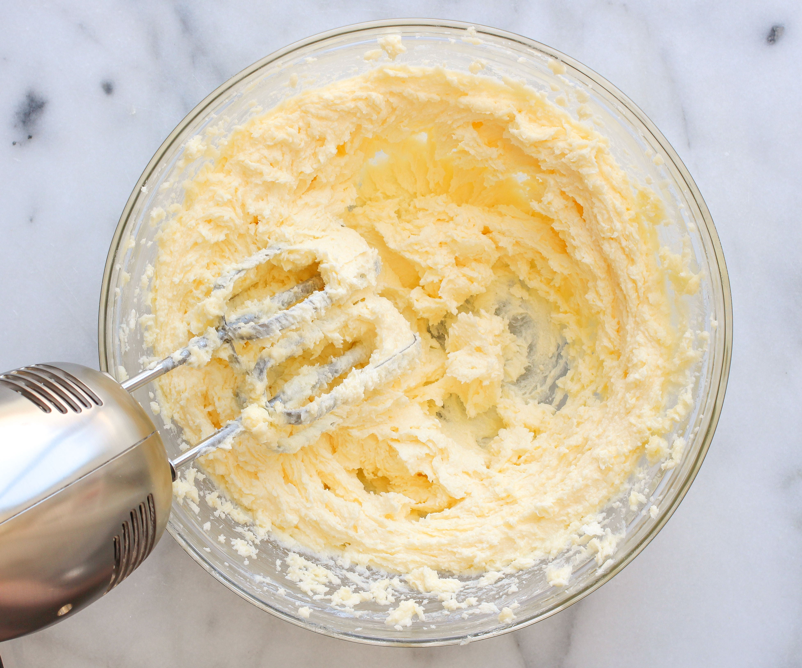
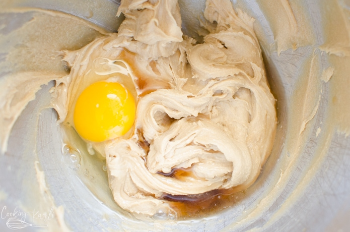
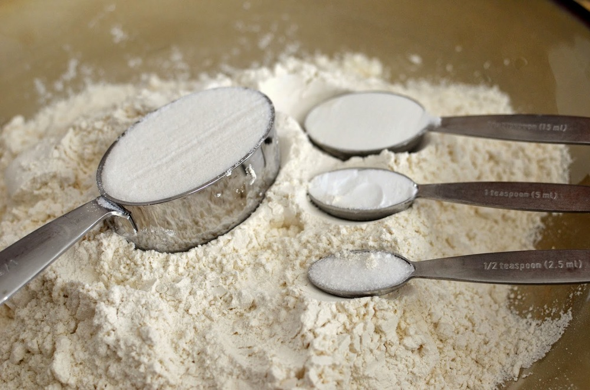
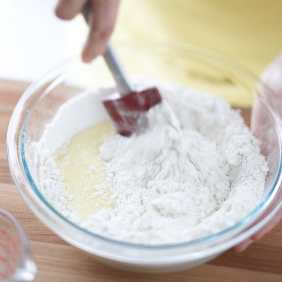
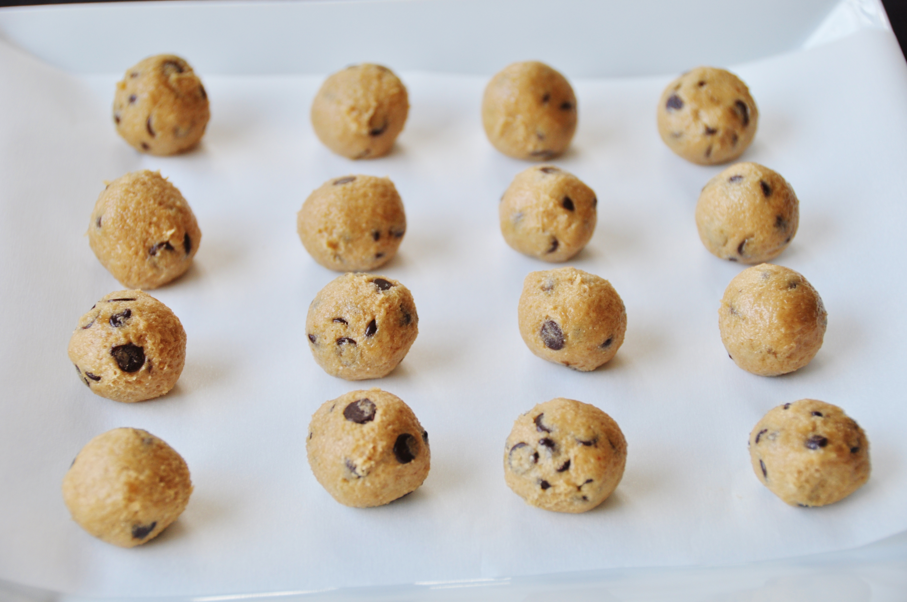
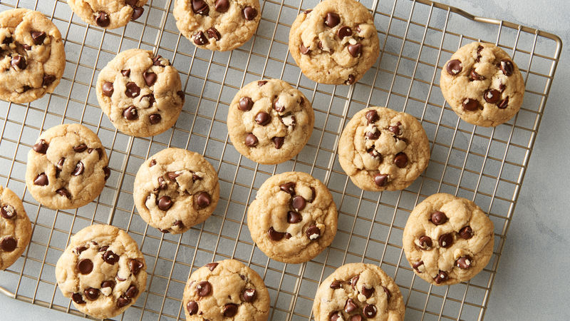

These are the most delicious chocolate chip cookies you will ever have. They are ooey gooey perfection and this recipe is fool proof!
Adapted recipe from The Dough Will Rise Again. Click below to view original recipe.
1. Preheat oven to 350 degrees. Cream together butter and sugars, until they are well combined.
2. Add one egg and mix until it's fully incorporated. Then add the second egg and vanilla extract and mix until everything is evenly incorporated.
3. Add baking soda, baking powder and salt to the wet mixture. Mix until well distributed.
4. Add about 1/2 your flour, and mix until the flour is just incorporated. Scrape down the sides of your bowl and then add the second half of your flour, mixing until just incorporated. Don't overmix or you'll end up with tough cookies.
5. Roll dough into balls. Place dough balls on a baking sheet lined with parchment paper. Leave about 2 inches between each cookie. Bake for 8-10 minutes or until the edges are lightly brown.
6. Let the cookies cool on the baking sheet for about 5 minutes and then move to a cooling rack. Once they are fully cooled, they can be stored in a ziploc bag or airtight container for up to a week!
